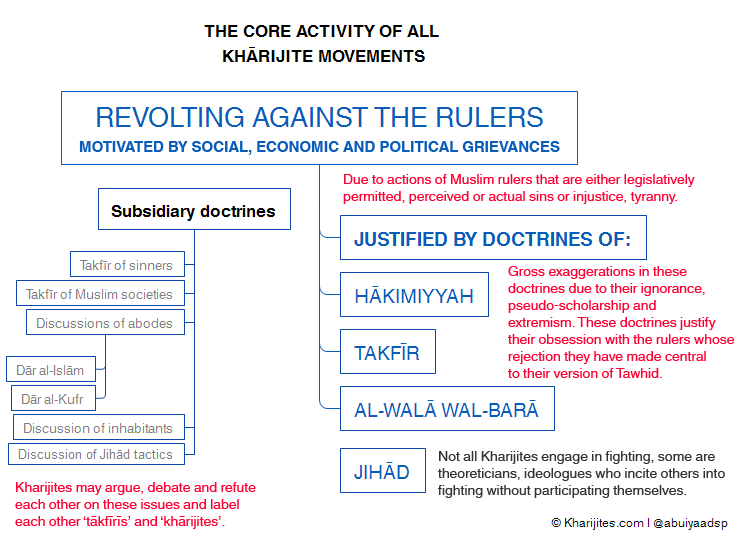

|
Kharijites.Com |
|
Refutation of the Black-Propaganda Claims of the Khārijites That They Are Not Khārijites Posted by Abu Iyaad on Monday, October, 17 2016 and filed under Analysis The Khārijite Extremists have a number of black-propaganda techniques involving deception, deflection and diversion in trying to remove the label of Khārijism from being rightfully applied to their views, activities and persons. These methods deceive the ignorant amongst the Muslims as well as numerous Western orientalists and academics, some of whom the Khārijites have worn and used like glove-puppets with their well-vaselined fists. These orientalists and academics then serve - unknowingly or knowingly - as propaganda outlets for these Khārijites. Their claims are:
The answer to their false claims is plain and simple and is a well-known matter of record in the books of history, biography and creed. It is not a condition for being a vile Khārijite that you make takfīr of sinful Muslims who may drink, gamble, fornicate or steal. Nor is it a condition for being a vile Khārijite that you make takfīr of entire societies of Muslims because they live within societies whose rulers do not judge entirely by the Sharīʿah or are sinful, oppressive and tyrannical.
Rather, the single, unifying, central element that comprises the religion of the Khārijites is revolting against the rulers and making takfīr of them whilst chanting, “Judgement is for none but Allāh” and “Whoever does not judge by what Allāh revealed are the disbelievers”. See this article for more details. This was the basis upon which the first Khārijite movements made takfīr of both ʿUthmān and ʿAlī (may Allāh be pleased with them both) – it was on the allegation of abandonment of ruling by Allāh’s law (tark al-ḥukm) or giving others the right of judgement (al-tashrīk fil-ḥukm). Subsequently, they revolted and eventually assassinated both of these noble Companions. As for takfīr of the sinners, takfīr of entire societies and rulings that follow on from these views within Khārijite jurisprudence, that is simply a level of extremism in addition to the central element. These additional ideas may or may not develop depending on individuals and circumstances. Historically, splits occurred among the Khārijites (see here). The Najadāt did not make takfīr by way of major sin. The Azāriqah deemed it permissible to kill women, children, the elderly and the disabled, considering them all to be disbelievers along with the rulers. Others amongst them extended the ruling of disbelief to the subjects merely on account of the disbelief of the ruler such as the Bayhasites and they consider the lands inhabited by them as lands of disbelief and war.  The central core activity is revolting against the rulers. This is justified through grounds of not ruling by Allāh’s law, the rulers are declared disbelievers. This in turn demands jihād to remove their political authority. Loyalty and disavowel centred around this creed (ḥākimiyyah) and the judgements of takfīr upon the rulers must be maintained to ‘actualise Tawḥīd’. This central core will have implications in terms of how to the Khārijites deal with government institutions (army, police, employed imāms) as well as Muslim societies in general. It is here where the subsidiary differences lie between the Khārijites and they argue, debate and refute each other, some of them accusing others of extremism, making generalised takfīr of Muslim societies, barbarity and the likes. The ‘moderates’ freeing themselves from the extremists. Some will accuse others of being Khārijites and others will free themselves from this label. The reality is that they are all Khārijites. As for the proof of history: The Khārijite movement present in the era of the Prophet (ṣallāllāhu ʿalayhi wasallam) challenged his authority and cast doubt on his integrity in the matter of the distribution of wealth. They essentially accused him of social and economic injustice and claimed that he had not acted in accordance with Allāh’s law (which demands justice in all dealings). The core issue with the Khārijite extremists and terrorists who came out against ʿUthmān (raḍiyallāhu ʿanhu) was that they accused him of social injustice and not judging by the justice that Allāh had commanded. On this basis they revolted against him, eventually assassinating him. Likewise with ʿAlī (raḍiyallāhu ʿanhu), they accused him (due to their ignorance) of granting men the right of judgement which belongs only to Allāh, and thus, he became a mushrik (polytheist) for doing so and then revolted against him, splitting from the main body and creating their own alleged Islāmic state. These were the first Khārijites, the Muḥakkimah, as they were called. Other groups appeared later and added doctrines varying in extremism as they faced new circumstances in their war against Muslims. So the central, unifying issue is takfīr of the rulers on account of perceived injustice translated into the claim of not judging by Allāh's law. This is founded on their extremist understanding of ḥākimiyyah. They revolt against them (khurūj) and consider this to be jihād and enjoining good and prohibiting evil. Thereafter, they make this the basis of loyalty and disavowal. There is no difference in this between Usāmah bin Lādin, Ayman al-Zawāhirī (al-Qaeda), Abū Muḥammad al-Maqdisī, Abū Qatādah, Abu Baṣīr Muṣtafā Ḥalīmah, Abū Muṣʿab al-Ṣūrī or Abū Bakr al-Baghdādī and Abū Muḥammad al-ʿAdnānī (ISIS) or the Juhaymānites and so on. They are all Khārijites, every last one of them. That some of them may refute the ‘extremism in takfīr of others’ and barbarity and butchery of others does not exclude them from being Khārijites since these disputes took place between the earliest Khārijites (see this article for details). As for biography: ʿImrān bin Ḥittān (84H) was from Ahl al-Sunnah in the era of the Tābiʿīn. He married a Khārijite woman whom he thought he could rectify but instead she turned him into a Khārijite. He held the view of revolt against the rulers, though he himself did not fight. Ibn Ḥajar said of him:
Likewise al-Ḥasan bin Ṣaliḥ bin Ḥayy (169H), he merely held the view of revolting against the rulers and would also not pray Jumuʿah in the mosques. He was shunned, declared an innovator, spoken against with harsh words and treated as a Khārijite by the Salaf. Al-Ẓahabī said:
As for creed: The Salafī Imām, ʿAbdullāh bin al-Mubārak (179H) said:
We see here that the issue revolves around rulers and does not have to involve Muslim societies or sinful Muslims and making takfīr of them. Imām al-Barbahārī (329H) said:
And Shaykh al-Fawzān commented on this statement in his explanation of Sharḥ al-Sunnah:
The Shaykh also said in another place:
Imām al-Ājurrī (360H) said:
Shaykh al-ʿUthaymīn said:
Shaykh Ibn Bāz said:
And Shaykh al-Albānī said:
From what has preceded the futile black propaganda techniques of contemporary Khārijites do not avail them because they cannot falsify the Prophetic traditions concerning them, they cannot falsify the books of history, they cannot falsify the books of biography and how the Salaf characterised and defined Khārijites of their time, they cannot falsify the books of creed that defined the central element of Khārijite ideology. For they are Khārijites, even if they hide behind slogans such as “Muwwaḥidūn”, “Followers of the Religion of Abraham” and even if they self-identify or are identified by Orientalists and academics as “Salafī-Jihādists”. For labels do not change the features and qualities, just as the label of “apple juice” on a bottle does not change the essential qualities of the intensely yellow urine that occupies it. The Khārijites and Western orientalists and academics are happy to deceive others through the use of mere labels whilst ignoring the actual physical realities.
Abu Iyāḍ
|